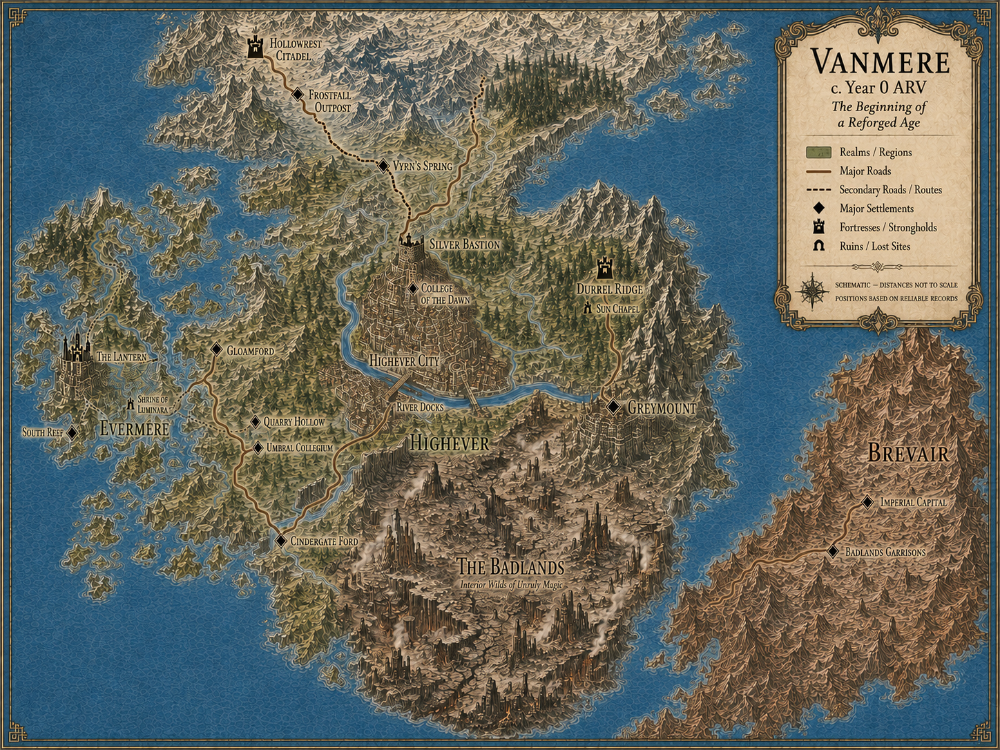

Every major region traced campaign by campaign, with the specific sub-locations that sit inside it. Bronze rows are Timeline A; steel-blue rows are Timeline B. Use this page to check exactly what a location looked like at a given point before reusing it in other material.

A dedicated current-state Timeline B map may join this viewer in its own steel-blue group in future.
Highever is the political territory surrounding its central fortress, Silver Bastion — see that entry below for the fortress's own detailed history. This entry covers the wider realm: its status, government, and role in the world at large, independent of who currently holds the Bastion itself.
| Campaign | Date | State |
|---|---|---|
| I | 0–27 ARV | Home realm of the new Heartwarden order; diplomatic and scholarly ties to Brevair and Menge. |
| II | 28–55 ARV | Becomes the political heart of the Dominion; Auran Gate, on Highever's approach, is conquered and converted into a foundry and training centre for Veil paladins. |
| XV–XVI | 8210–8245 ARV | Becomes the Ley-Crown / civic optics capital — nerve-centre for the Concord Charter and the Five Optics (Witness Hand, Line-of-Sight, Three Counts, Exit Shown, Auric Anoint). Anchors one end of the Concord corridor, linked by Corridor Cadence to Tarenus Reclaimed and the Port Annex. |
| XIX | 8550–8555 ARV | Links administratively to Aderyn's Gate and Tarenus Reclaimed as part of a three-city harmonised network. |
| Campaign | Date | State |
|---|---|---|
| B1 | 0 ARV | Wealthy, orderly realm; becomes the political centre for rupture management once the Order of Anchors is founded. |
| B11 | 148–149 ARV | Loses its uncontested Light fortress when Silver Bastion falls — the realm itself remains, but its symbolic centre is now hostile territory. |
| B14 | Late c. 162 ARV | Silver Bastion returns to Light control. Highever regains its symbolic fortress, though the realm must still rebuild its military, sacred, and civic institutions after years of internal occupation. Brevair remains the principal surviving territorial concentration of Veil authority. |
The single most contested structure in the entire chronicle — the same physical fortress changes hands, names, and purpose more than anywhere else in Amora. It's also where both timelines begin: Campaign I and Campaign B1 open in the same chamber, on the same night, with radically different outcomes. The Heart Seal's location here is direct canon — the strongest fixed seal-site in the setting; see the Magic Codex for the full seal-location concordance.
| Campaign | Date | State |
|---|---|---|
| I | 0–27 ARV | Fortress-temple of Luminara; seat of the Paladin Council and the Heartwardens. The Heart Seal is discovered here. |
| II | 28–55 ARV | Reforged as the Obsidian Bastion / Sanctum of the Veil; the Heartwardens are renamed the Veilwardens. |
| III | c. 900 ARV | Returns as a mixed-faith academy under the New Heartwardens. |
| IV | c. 1900–2000 ARV | Rises again as the Confluence's seat under Coren Veyne; later becomes a pilgrimage ruin rather than a functioning centre of power. |
| XIX | 8550–8555 ARV | Houses the Sanctuary of Balance, an academy annex; site of the Purity network's rise and Severance. |
| Campaign | Date | State |
|---|---|---|
| B1 | 0 ARV | Becomes the founding seat of the Order of Anchors, in the same chamber where Taren and Zethyr Durrel are unmade before their story can begin. |
| B3–B4 | 1–2 ARV | The Frostborn Vault is discovered beneath the Anchor Quarters; the quarters are later classified Resonance Zone 14 after the first Veil-echo purge. |
| B9 | 136–137 ARV | Its Tribunal Undercroft is liberated from a lingering Veil/Shah civic anchor by Taren Durrel. |
| B11 | 148–149 ARV | Falls to Cameron: the internal Light-aligned command structure is dismantled through infiltration and staged collapse, the central chapel is seized and publicly reconsecrated to Shah rather than merely profaned, and the fortress-scale ward-anchor is corrupted through a living conduit rather than brute force. Formally renamed the Veiled Citadel; "Silver Bastion" is killed as a living institutional identity and survives only as historical reference. |
| B14 | Late c. 162 ARV | Reclaimed by a Durrel Ridge-led campaign infiltrating from within — its Saint-Ward, ward-anchor, and servant-light paths all restored to the Light; Cameron and Gavren killed, the Veiled Citadel ends, and surviving Veil power is driven back toward Brevair. |
Evermere is destroyed and rebuilt more times than anywhere else in Timeline A, and separately becomes Timeline B's most detailed civic setting from Campaign B6 onward. It's also the interpretive map-key location for the Flame Seal — Arienna Voss's line are Flamebinders; see the Magic Codex for the confidence level on this placement.
| Campaign | Date | State |
|---|---|---|
| I | 0–27 ARV | Coastal sanctuary; site of Zethyr and Taren's marriage. |
| II | 28–55 ARV | Annexed and given to Zethyr; becomes an imperial pleasure and legal centre. |
| III | c. 900 ARV | Rebuilt as a Collegium. |
| IV | c. 1900–2000 ARV | Prospers as a rebuilt kingdom. |
| XI | c. 6550 ARV | Latest incarnation as a citadel of contracts, home to the Lyricum. |
| XVII | 8410–8415 ARV | Rebuilt atop drowned Concord-era datacores as a candlelit, low-tech city-state; the Red Lattice Quarter becomes its defining district. |
| XVIII | 8500–8505 ARV | Gains the Collegium Vaults, the Archive of Glass, Pilgrims' Square, the Lower Wards, and the Ruined Spires; unified under the Mirror of Law. |
| XXI | 8650–8660 ARV | Annex V re-tooled as the Hall of Paper; the Sable Gate Cisterns become the Null council's ritual floor. |
| Campaign | Date | State |
|---|---|---|
| B6 | 84–85 ARV | Dain Corvett purchases The Lantern, a coastal tavern, marking the city's shift into Timeline B's main recurring civic setting. |
| B7 | 85 ARV | The Lantern Annex is built out; a mutual-aid pact is formed with Durrel Ridge. |
| B8 | 86 ARV | Corvett Estate and civic registry/licensing institutions become the setting for an entirely paper-based conflict. |
This city changes its own name more often than any other location in Amora — five distinct identities across Timeline A alone, each marking a different political regime built on the same ground. It's also the interpretive map-key location for the Stone/Earthbound Seal; see the Magic Codex for the full seal-location concordance and confidence levels.
| Campaign | Date | State |
|---|---|---|
| II | 28–55 ARV | Fortified hill-city rebuilt as Greymount Sanctum, then Tarenus Keep — the Dominion's capital, after the Rite of Binding. |
| III | c. 900 ARV | Ruins explored and the Vault of Tarenus resealed under Edrin's new terms. |
| XII | 7400–7410 ARV | Rebuilt as Inheritance-Reclaimed, a durable republican centre under Kael Durreth's Harmony Network. |
| XIII | 7420–7421 ARV | Becomes the Citadel of Inheritance; falls into the Free Citadel, a city of archives rather than edicts, after the Chain's Severance. |
| XV–XVI | 8210–8245 ARV | Functions as Tarenus Reclaimed, the administrative/commerce core of the Concord corridor. |
| XIX–XX | 8550–8620 ARV | Completes a three-node network with Highever and Aderyn's Gate; the Vault of Tarenus stirs nightly, leading to Campaign XX's Dual-Key stabilisation. |
| Campaign | Date | State |
|---|---|---|
| B5 | 3–4 ARV | A Bastion-aligned inland city with residual buried vault structures (referenced back in Campaign V); site of Lio and Caen's investigation into Shah-aligned ritual influence, and where Caen receives his Veil imprint at Greymount's conduit beneath Rillhaven. |
| B6 | 84–85 ARV | A Luminara resistance cell investigates ritual saturation practices here; the buried vault systems stay dormant and undisturbed throughout — no ley-field distortion, no conduit reactivation. Shah influence remains present but doesn't escalate; the city returns to relative equilibrium once the cell departs. |
Brevair's starting relationship with Highever is genuinely different between the two timelines, not the same premise playing out two ways. Timeline A begins diplomatically engaged and becomes a crown ally through the Heartwardens' work; Timeline B begins as an isolationist, militarised rival under Emperor Trainor Fell.
| Campaign | Date | State |
|---|---|---|
| I | 0–27 ARV | Becomes a crown ally to the new Heartwarden order. |
| II | 28–55 ARV | Annexed; capital renamed Durrelion, rebuilt in black stone under the Dominion. |
| III | c. 900 ARV | Dissolved into independent city-states. |
| Campaign | Date | State |
|---|---|---|
| Pre-0 ARV | — | Isolationist, militarised empire under Emperor Trainor Fell — palace, barracks, drill-yards, ministerial halls, coastal forts, and inland garrisons. Not a crown ally at this point. |
| B5 | 3–4 ARV | Emperor Trainor Fell is assassinated, producing internal instability and shifting regional power toward Bastion. |
| B10 | 146–147 ARV | House Valecour's engineered collapse and rebirth leaves Rhalen Valecour as Brevair's uncrowned ruler — capital named Corvane on this site (see the Canon Ledger). His rule spreads through dependency rather than conquest: widow houses become a principal channel for quiet consolidation, chapel and charity funds are administratively redirected rather than openly captured, and merchant/magistrate authority increasingly answers to Rhalen's systems while misreading Delryn as the "acceptable" public face of a reformed house. |
The ancestral home of the Durrel line, predating Campaign I itself. Its family crypt houses statues of the first Heartwardens and the vault where the Heart Seal was originally found — founded generations before Campaign I by Tarenus Durrel, Taren's ancestor. By the time Zethyr and Taren arrive at Silver Bastion, the order Tarenus founded had lapsed; they revive it rather than start it fresh. Appears only as background lineage estate in Timeline A, but becomes one of Timeline B's most important recurring settings from Campaign B7 onward — the site that carries the Durrel line's institutional weight for the second half of that timeline's current record.
| Campaign | Date | State |
|---|---|---|
| B7 | 85 ARV | First appearance in Timeline B; a mutual-aid pact is formed with The Lantern in Evermere. |
| B9 | 136–137 ARV | Reclaimed and cleansed by Taren Durrel; rebuilt as a Warden institution anchored in witness law. |
| B12 | 150 ARV | Re-centres as command-centre and lived household under Jack Durrel; a cadet-branch Durrel child is brought here. |
| B13 | c. 162 ARV | The cadet-branch child, now Caelen Durrel, is targeted and reclaimed by Thorn House; Vault access wards are strengthened afterward. |
| B14 | Late c. 162 ARV | Serves as the planning and staging base for reclaiming Silver Bastion; proves it can project organised military power well beyond its own walls. Mike Rookvale is accepted as a formally recognised field scout and given the Rookvale family's reopened quarters; Caelen and Corvin marry in the sun chapel before the gathered household. |
A wild-magic desert at the interior of Vanmere, distinct from Menge, already ancient by 0 ARV — proof neither the Dominion nor any later calamity created it. Officially avoided and shunned by every institution on the continent, yet consistently, quietly explored anyway.
The story ordinary people tell: centuries ago, a small group of mages conducted a catastrophic experiment that reached too far and burned an entire region into wasteland. This rumour is also why mages became objects of general suspicion throughout Vanmere — the popular memory of the Badlands and the popular memory of mage-suspicion are the same story, told from two angles.
The true origin, as established in Lore: the Badlands are what remained after the War of Ash and Glass — a conflict between sorcerous bloodlines and warlock covenants — ended in the Shattering, when the sorcerous houses drew on Vanmere's foundational ley structure while the covenants anchored vast pacts into that same network at the same moment. The collision ruptured ley-lines, burned and glassed the terrain, and destroyed the houses and covenants fighting to control it. Popular memory simplified this entire war into the single rumour of "a mages' experiment" — the public account above is that simplification, not a fabrication from nothing.
Wild-magic storms, violently shifted stone, shattered towers, buried vaults, pre-cataclysmic ruins, and artefacts described as "too powerful to exist." Expeditions into the Badlands are notorious for how few people return from them — yet nobles and mages continue to secretly sponsor scavengers and relic hunters despite the region's official shunned status, precisely because of what still might be found there.
Later events damaged the Badlands further without creating them. Taren's Dominion used parts of the region for exile and penal settlements, mined Veilstone there, and diverted ancient ley-rivers to feed imperial infrastructure (Campaign II onward). Centuries later, the Sundering Tempest's aftershocks fractured the region further into glass canyons, now occupied by nomads, scavengers, and relic hunters (~2200 ARV). See the Canon Ledger for the separate "Badlands of Menge" naming issue — a different, later-blighted part of Menge, not this region.
Not part of the earliest Heartwarden baseline the way Silver Bastion is, but marked on the map as a distinct ancient historical site in the northeast — a hard-weather remote post associated with the northern storm tradition rather than a population centre. It's the map-keyed location for the Storm/Tempest Seal, sitting alongside Vyrn's Spring (Frost) and Hollowrest Citadel (a neighbouring Binder ruin, not a duplicate seal-site) as the three ancient markers of the same northern sacred landscape. This placement is map-keyed support rather than direct canon — see the Magic Codex for the full seal-location concordance.
Veylaris has one of the most cyclical histories in Amora — it collapses and rebuilds at least three times across Timeline A, each time on the ruins of the last.
| Campaign | Date | State |
|---|---|---|
| V | c. 2500 ARV | AI-driven metropolis of glass towers, home to the Choir; collapses at the campaign's end. |
| IX | c. 5950 ARV | Begins rebirth on the ruins of the Choir-era metropolis. |
| XI | c. 6550 ARV | Rebuilt on Choir foundations as Veylaris Rest — a free republic of merchants, smugglers, and relic brokers. |
A shorter but pointed arc — from emergency institution, to theocracy, to cautionary ruin, in the space of three campaigns.
| Campaign | Date | State |
|---|---|---|
| VII | c. 5800 ARV | Becomes capital of the Wardens' Theocracy after the Executor office is founded here. |
| VIII | c. 5900 ARV | "A city of laws layered upon laws," home to the Gate Codex. |
| X | c. 6450 ARV | The Gate Empire collapses in fire and rebellion at the campaign's start. |
| XI | c. 6550 ARV | A half-deserted archive city, mined for relics. |
Menge is the clearest example of a region whose entire reputation changes between timelines — treated as a hostile threat in Timeline A, reclassified as a wronged people in Timeline B.
| Campaign | Date | State |
|---|---|---|
| I | 0–27 ARV | Frozen frontier of tribes and Binder conflict; the Icebinders treated as a dangerous lost line. |
| II | 28–55 ARV | Declared beyond redemption; auroras become a sign of Light resurgence outside Dominion control. |
| V | c. 2500 ARV | Coastlines fracture into the Verge Archipelago during the Sundering Tempest. |
| XI | c. 6550 ARV | Region thaws into new flora and auroras; Bastion Saren sleeps beneath the ice. |
| XIV | 7920–8040 ARV | Thawed lands serve as the Dominion's forge and frontier. |
| Campaign | Date | State |
|---|---|---|
| B2 | 0 ARV | Frostfall Outpost and Hollowrest Citadel discovered; the "Icebinder cult" reclassified as an ancient Binder diaspora, their downfall due to collapse, not heresy. |
| B3 | 1–2 ARV | Vyrn's Spring confirmed as a hidden, living Frostborn enclave. |
These locations only exist in the final stretch of Timeline A (Campaigns XXII–XXV) — entirely new geography introduced after the thousand-year jump, with no equivalent earlier in either timeline.
| Campaign | Date | State |
|---|---|---|
| XXII | 9650–9660 ARV | Caelwick Frontier Post: a rainswept charter outpost (population ~2,400) built atop a collapsed Dominion scribe-vault, where the Arden/Caelen shard-pattern imprint first forms. Designated Fault-01: the Caelwick Node — the first identified Quiet Fault on the continent. The Under-Pump Galleries nearby are separately classed a Tier-2 Quiet Zone: no active arcane power, but architecture that still listens for command. |
| XXIII | 9670–9680 ARV | East Vanmere / Vanmere city: the shard reinstantiates Arden and Caelen a millennium later; the Rainshelf district becomes Arden's community after Caelen's death. |
| XXIV–XXV | 9700–9800 ARV | Academy of Resonant Studies: built to train stabilisers and anchors for the post-Dominion age; site of the world's first Living Dyad and, ultimately, the Fracture that ends Timeline A. |